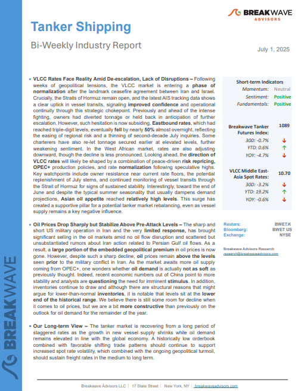
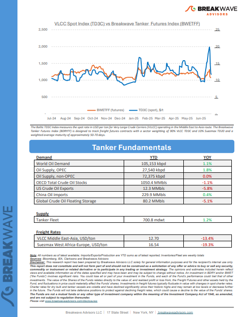
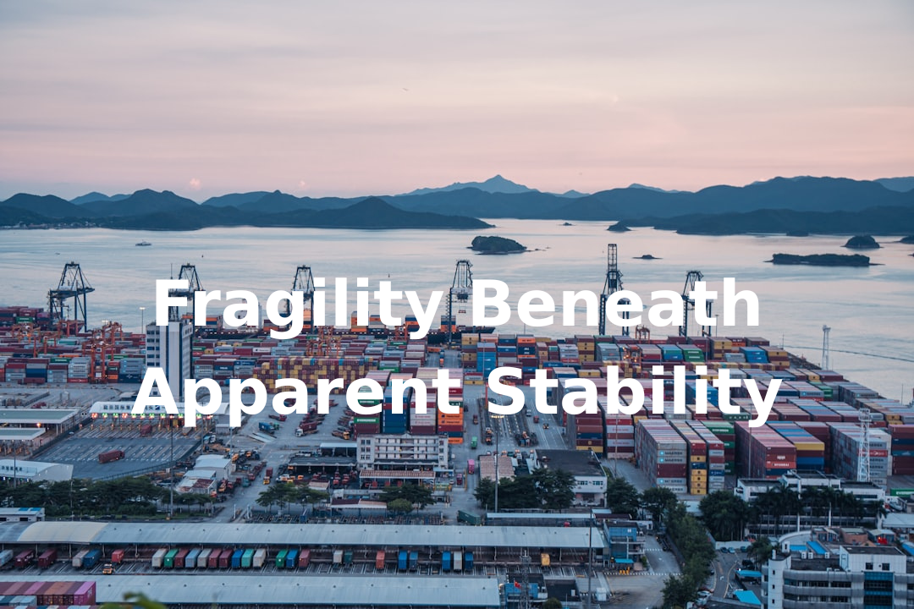
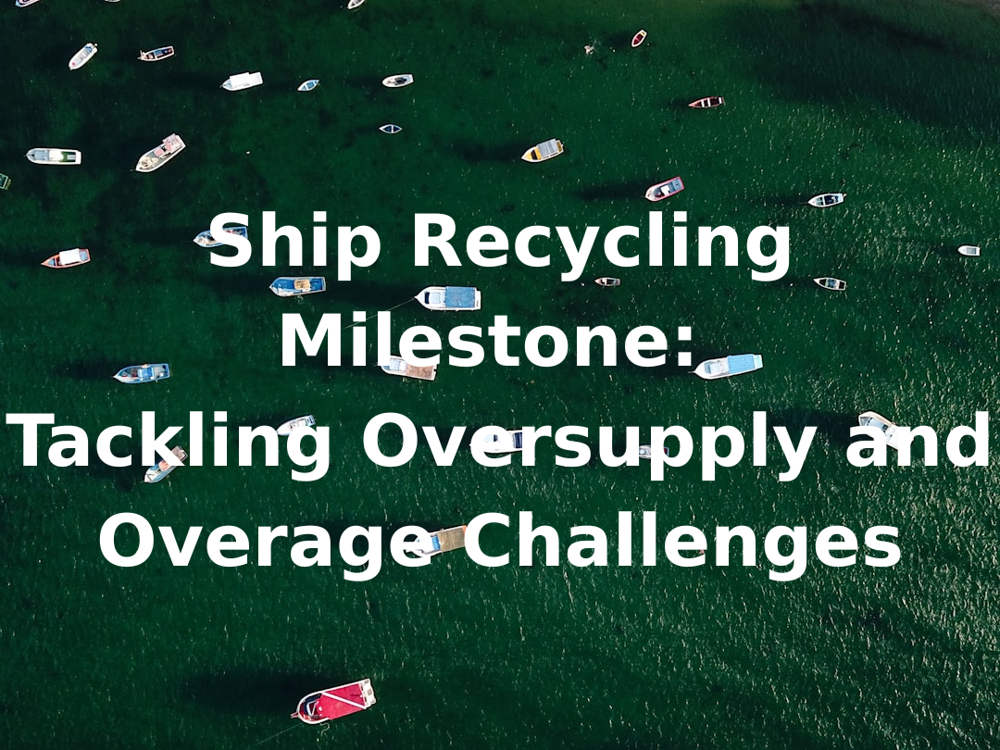

As the week comes to a close, take a moment to review the key insights from the past few days. Missed something? We've gathered all the top insights for you to catch up at your convenience.
VLCC Rates Face Reality Amid De-escalation, Lack of Disruptions– Following weeks of geopolitical tensions, the VLCC market is entering aphase of normalizationafter the landmark ceasefire agreement between Iran and Israel.



Oil markets began the week on edge as fears mounted over a potential closure of the Strait of Hormuz following U.S. airstrikes on Iranian nuclear sites.
Doric Weekly Market Insights
Earlier this month, the International Energy Agency (IEA) released their annual report detailing a medium-term outlook for oil markets.
Gibson Tanker Market Report
Markets are rallying due to easing Middle East tensions, falling oil prices, lower yields, and dovish signals from the Fed, which may cut rates by September.
Forvis Mazars Weekly Note

First adopted in Hong Kong in 2009, the Convention’s implementation has been a long and complex process, reflecting years of negotiation, debate, and determination from governments, regulators, industry stakeholders, and NGOs.
Allied Weekly Report
After setting an all-time high for coal imports in 2024, China appears to be entering a new phase of recalibration.
Intermodal Weekly Market Report
As fragile peace has been brokered in the Middle East, we look at how rising onshore crude inventories across the globe kept crude oil prices in check.
Vortexa Freight Weekly
Easing trade tensions triggered a risk on tone across markets, boosting appetite for risk assets such as commodities. Metals led the gains while energy was also higher.
Commodities Wrap
As we discussed in Commodore Research's most recent Weekly Executive Report, overall dry bulk rates increased last week, with only capesize rates declining.
From Commodore's Weekly Dry Bulk Reports
Despite relaxed voluntary production targets, OPEC-8 crude exports remained stable, while the rest of OPEC+ crude exports show growth over the last two months.
Vortexa Freight Weekly
Since late April 2023, Sudan has been gripped by an internal conflict between the Sudanese Armed Forces (SAF) and the Rapid Support Forces (RSF), which has significantly disrupted crude oil exports via the Bashayer terminal.
Signal Ocean Tanker Weekly Market Monitor